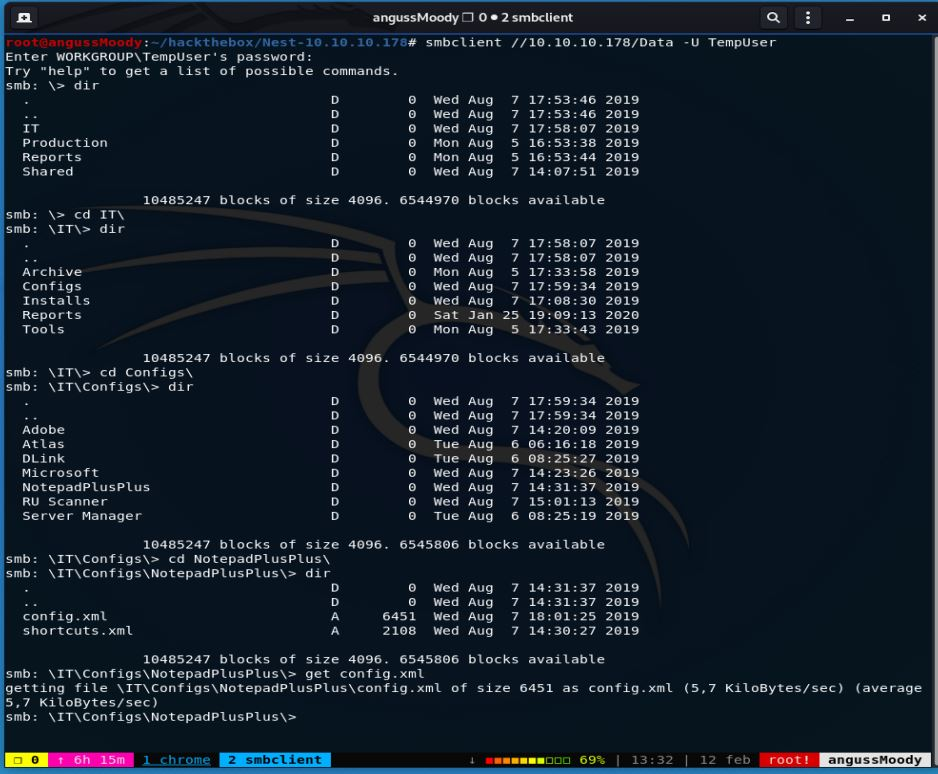

HTB Máquina Nest

angussMoody
- Sistema: Windows
- Puntuación: 3.9
- Categoría: Media
• Usuario:
Lo primero que realizamos es un escaneo de puertos con nmap, para saber que puertos tiene abiertos esta máquina y solo encontramos el puerto 445 y 4386, así que vamos a ver que podemos realizar con alguno de estos puertos.

Realizamos una consulta con smbclient a nuestra máquina y nos encontramos con 6 directorios, ahora solo debemos empezar a enumerar nuestra máquina, para saber a que directorios tenemos acceso sin password y que podemos encontrar que nos ayude en búsqueda de nuestra primera flag.
Enumerando un poco nos encontramos que en el directorio Data\Share\Templates\HR se encuentra un archivo de bienvenida, lo descargamos para revisar que es este archivo.
Vemos que al parecer es una plantilla de bienvenida para el personal nuevo, con un usuario y una password por defecto.
Siguiendo con la enumeración nos encontramos con los directorios de los usuarios de esta máquina, sin poder realizar ninguna acción en ellos o encontrar algún archivo interesante, pero ya tenemos un listado de posibles Usuarios.
Iniciamos enumeración con las credenciales encontradas anteriormente, y nos encontramos un archivo interesante llamado config.xml

Al leer este archivo, nos muestra una ruta interesante dentro del directorio Secure$ y nos nombra uno de los usuarios.

Además, nos encontramos con otro archivo llamado RU_Config.xml que a primera vista parece un texto en base64 y el mismo usuario C.Smith

Pero al tratar de decodificar el texto nos damos cuenta que no es en base64 así que seguimos enumerando.
Como vimos en el archivo de config.xml hay una ruta dentro del directorio Secure$, así que ingresamos a esa ruta y nos encontramos con un directorio llamado RU que al parecer es un proyecto en Visual Studio, nos descargamos todo el directorio y nos pasamos para una máquina Windows, donde podremos compilar el archivo.
Ya en nuestra máquina Windows abrimos el proyecto en Visual Studio y le damos iniciar, el nos compila este proyecto, y nos crea unos archivos dentro del directorio Debug, pero nos da un error, el cual nos dice que nos falta un archivo para compilar el proyecto y que este archivo está bajo el nombre de RU_Config.xml, archivo que ya conocemos así que vamos a poner este archivo en el directorio que nos indica.
Corremos de nuevo el proyecto y este nos corre sin ningún error, ahora entender un poco que es lo que está realizando este proyecto y vemos que es un proyecto para desencriptar la password.

• Escalada de Privilegios:
Enumerando la máquina nos damos cuenta que está corriendo Azure, así que tratamos de encontrar una vulnerabilidad conocida para realizar el escalamiento de privilegios
De esta manera encontramos la flag del Root.
Saludos Fr13ndS HTB